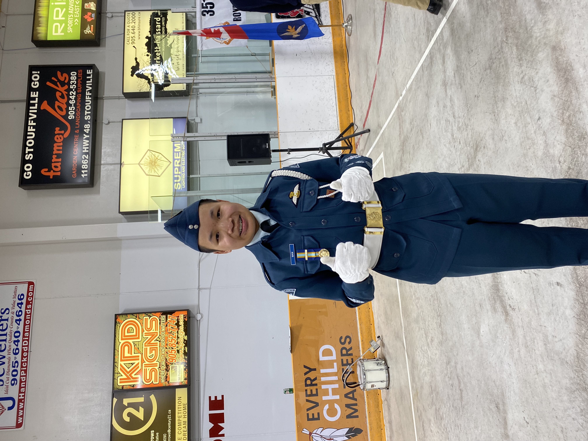
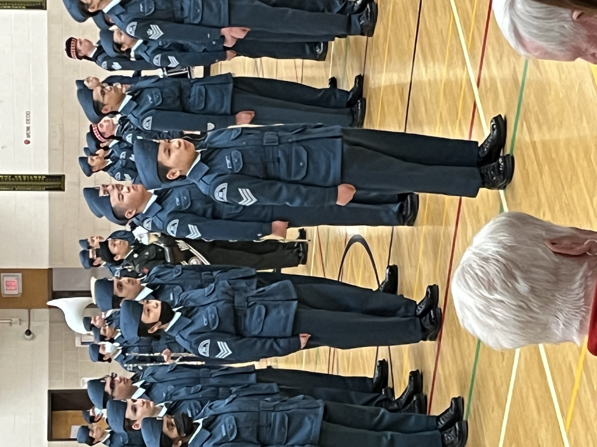
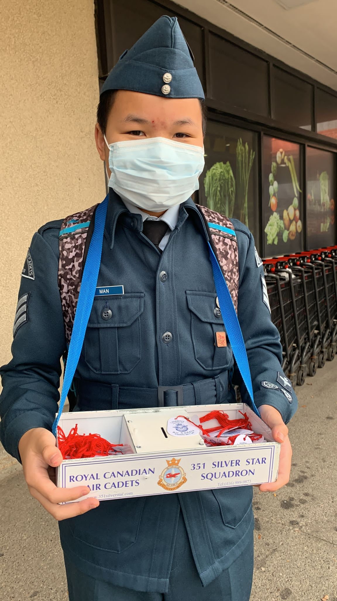

Air Cadets
Since joining the 351 Silver Star Squadron in 2019, I have been passionately involved in many roles and responsibilities, helping our squadron to grow and succeed. The aim of the Cadet Program is "to develop in youth the attributes of good citizenship and leadership, promote physical fitness, and stimulate interest in the sea, land, and air activities of the Canadian Forces". Throughout my time with the squadron, I have shown lots of dedication and commitment in learning the skills of the cadet aim, and teaching these skills to cadets younger than me, to ensure the succesful continuance of the squadron.
In my current role as the Support Senior Warrant Officer, I oversee the supply (in charge of the cadet uniforms) and the weekly activities that are vital to the smooth functioning of our squadron. The 351 activities include marksmanship, biathlon, effective speaking, UPAR, flag party, drill team, sports night and band, in which each of these events have seperate weekly meetings. This position has allowed me to ensure that all supply and activity aspects are handled efficiently, supporting the needs of over 300 cadets.
A notable highlight of my time with the squadron was being selected as the acting Drill Commander on just three days of notice. This experience not only demonstrated my commitment and ability to adapt quickly, but it has earned me the Top Drill Team Member award, recognizing my fexible leadership under pressure.
My efforts have been acknowledged through several prestigious awards. Alongside with the Top Drill Team Member Award, I have received two other awards, including the Commanding Officer's Coin for outstanding contributions in the squadron. Additionally, I earned the Top Ground School Award by achieving the highest mark of 98% in the Glider Ground School, reflecting my dedication and expertise in aviation.
Beyond my administrative duties, I actively participate in a variety of squadron activities. We take part in tagging events, where cadets volunteer to fundraise for the Air Cadet Program by distributing tags at local shops and restaurants. Our squadron also participates in the Remembrance Day and Santa Claus parades, demonstrating our commitment to community involvement. Field training exercises are another key component of our program, where we learn essential survival skills, including first aid.
Additionally, I have led and supervised a new event called the Year End Fun Fair. This event showcases all the activities over the past year to inspire new cadets to get involved in 351's programs.

Through my involvement, I strive to pass on my knowledge and experience to the junior cadets. My goal as a senior cadet is to ensure that the junior cadets have developed their leadership skills in order for them to take on future leadership positions, allowing them to grow further in the program. Furthermore, I am dedicated to sharing my passion for aviation with the junior cadets. My goal is to inspire them to participate in the Glider and Power Pilot Training Program, fostering a lasting interest in aviation within the squadron.
.